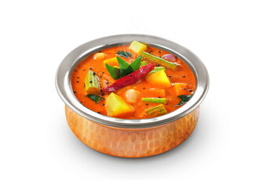

Home
Sambar

Description
Sambar is a traditional South Indian stew made primarily from toor dal (pigeon pea lentils) and tamarind broth, combined with a variety of vegetables. It is flavored with a unique spice blend known as sambar powder, which gives it a distinctive tangy and spicy taste. The dish is often tempered with mustard seeds, curry leaves, dried red chilies, and asafoetida, enhancing its aroma and flavor.
This hearty and nutritious dish is a staple in South Indian cuisine and is commonly served with steamed rice, idli, dosa, or vada. Its preparation involves cooking lentils and vegetables separately before combining them with tamarind extract and spices, then simmering to develop a rich, complex flavor. Sambar is versatile, with many regional variations in ingredients and spice levels, making it a beloved comfort food across India and beyond.
Ingredients
For the Dal:
- Toor dal (pigeon peas) – ½ cup
- Turmeric powder – ¼ tsp
- Water – 2 cups
- Vegetables (choose 3–5 of the following): Drumsticks, carrots, pumpkin, brinjal (eggplant), okra, tomatoes – chopped (about 1½ cups total)
For Tamarind Water:
- Tamarind – small lemon-sized ball (soaked in ½ cup warm water & extract juice)
Spice Mix:
- Sambar powder – 1.5 to 2 tbsp (store-bought or homemade)
- Salt – to taste
For Tempering (Tadka):
- Oil or ghee – 2 tbsp
- Mustard seeds – 1 tsp
- Dried red chilies – 2
- Curry leaves – 10
- Asafoetida (hing) – a pinch
Garnish:
- Fresh coriander – chopped
Instructions:
Step 1: Cook the Dal
- Rinse and pressure cook toor dal with turmeric and water for 3–4 whistles. Mash well and set aside.
Step 2: Cook Vegetables:
- In a pot, cook chopped vegetables with salt and a little water until just tender.
Step 3: Add Tamarind and Sambar Powder
- Add tamarind extract and sambar powder to the vegetables. Simmer for 5–7 minutes.
Step 4: Add Dal
- Add the cooked dal to the simmering tamarind-vegetable mix. Add water as needed to adjust consistency. Simmer for 5–10 minutes.
Step 5: Prepare Tempering
- Heat oil in a small pan, add mustard seeds. When they splutter, add red chilies, curry leaves, and hing.
- Pour this over the sambar.
Step 6: Garnish and Serve
- Garnish with coriander.
- Serve hot with steamed rice or idli/dosa.
There ypu go! Tasty sambar is ready to serve.